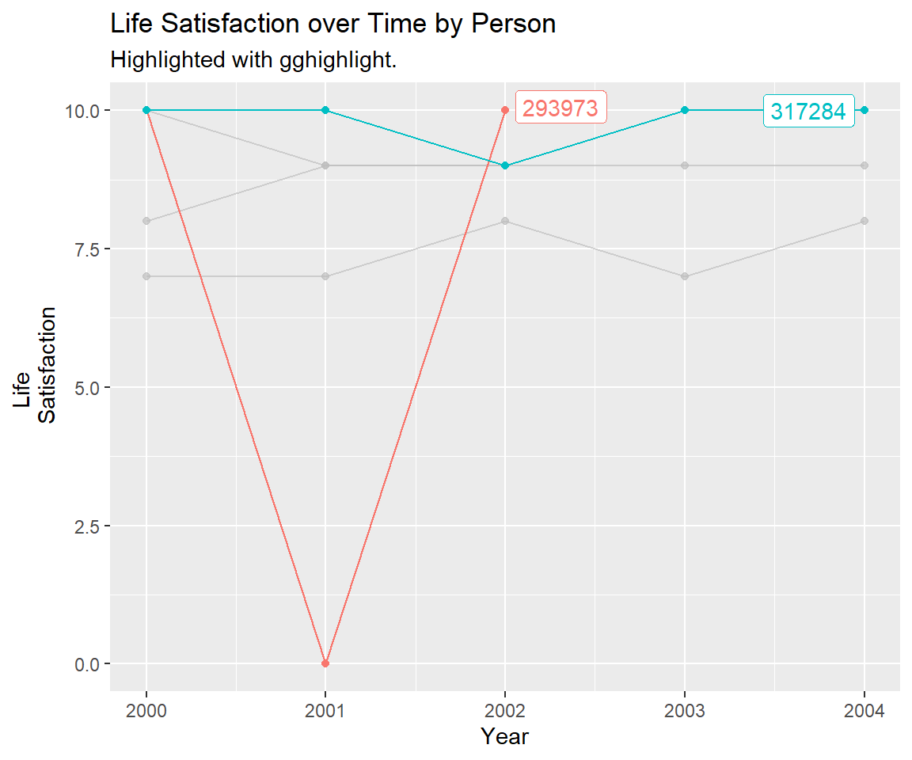

Chapter 3 Panel Data
3.1 Learning Goals
- Conceptual Skills:
- Understand panel data. Panel attrition.
- Distinguish between and within variation.
- Compare the paired and unpaired t-Test to panel data.
- Data Skills:
- How
set.seed()defeats randomness.
- Find and use functions from other people.
- Tidyverse e.g.
group_by(),sample_n(),summarize(),count(),arrange(). - Data Visualization: Panel plots (time series per group).
- How
3.2 Paneldata
Panel data are observations for the same subjects over time. Subjects can be people, households, firms or countries. Panel data are a subset of longitudinal data. Key components are the panel identifier: person (id) and time (year). Every row is a person-year combination (so called long format).
Compare these types of data:
- Cross-section: One time measurement.
- Repeated cross-section: Different people.
- Panel: Repeated observations of the same individuals.

Figure 3.1: Table 1: Types of Data.
Panel data allows for special statistical analyses, e.g. fixed effects regression. With panel data we know the time-ordering of events. Panel data allow to identify causal effects under weaker assumptions (compared to cross-sectional data). Different types of data can answer different types of questions:
- Levels: How many people are poor in 2016 in Germany?
- Trends: Has poverty increased or decreased?
- Change: How many people went in and out of poverty?
The unemployment rate in Germany is about 5 % over the last few years (Source: Annual average unemployment rate in Germany from 2005 to 2022).
Imagine a college graduate enters the job market. It takes about 3 month to search for jobs, send applications and do the job interviews. Finally she finds a perfect match. After some years the college graduate falls in love with someone who lives in another city, so the student moves to this city, again looking for a job at a new employer.
Imagine another college graduate. He sends 5 applications for various jobs per week. He has several mini jobs to keep afloat. The student realizes that he did not acquire the skills that are expected on the job market. After 2 years, he finally finds a suitable position.
Do you think that is a cause for concern?
Life after collage.

alt text
Panel data allows to analyze the level of unemployment in Germany as well as the changes and trajectories of individuals. We can separate a frictional unemployment component and a permanent unemployment share. Frictional unemployment is a form of unemployment reflecting the gap between someone voluntarily leaving a job and finding another. As such, it is sometimes called search unemployment. Do we accept search unemployment? Is it different from long-term unemployment? What do you think.
Some famous household panel data studies are:
- United States: Panel Study of Income Dynamics (PSID) since 1968
- Germany: Socio-Economic Panel (SOEP) since 1984
- United Kingdom: British Household Panel Survey (BHPS) since 1991
- Australia: Household, Income and Labour Dynamics in Australia Survey (HILDA) since 2001
These scientific datasets can often be analyzed for research and student theses free of charge.
3.3 Data Preparation
Load SOEP practice data from web into temporal memory and into R.
library(haven)
soep <- read_dta("https://github.com/MarcoKuehne/seminars_in_applied_economics/blob/main/Data/soep_lebensz_en.dta?raw=true")3.4 Group by person
group_by() is a powerful command, especially when working with panel data. Use count() after group_by() to get the number of observations of each person (id) in the data:
library(tidyverse)
head(soep %>% group_by(id) %>% count()) See result.
#> # A tibble: 6 × 2
#> # Groups: id [6]
#> id n
#> <dbl> <int>
#> 1 312 1
#> 2 399 2
#> 3 457 3
#> 4 748 1
#> 5 761 2
#> 6 1044 5Adding arrange() means sorting the data by a variable (i.e. the n) either ascending or descending (from high to low).
soep %>% group_by(id) %>% count() %>% arrange(desc(n)) See result.
#> # A tibble: 3,550 × 2
#> # Groups: id [3,550]
#> id n
#> <dbl> <int>
#> 1 1044 5
#> 2 1300 5
#> 3 1343 5
#> 4 1889 5
#> 5 2160 5
#> 6 2241 5
#> 7 3240 5
#> 8 3535 5
#> 9 3787 5
#> 10 4107 5
#> # … with 3,540 more rows# A tibble: 3,550 x 2, i.e. there are 3550 ID-groups (or units or people).
Remember that the observation period is between 2000 and 2004, i.e. min is 1 year, max is 5 years.
#>
#> 2000 2001 2002 2003 2004
#> 3198 2690 2485 2299 2250Attrition is the process of dropout from a panel study.
How many people are observed in all years? Filter for a specific n and check the tibble size again.
soep %>% group_by(id) %>% count() %>% filter(n == 5) See result.
#> # A tibble: 1,851 × 2
#> # Groups: id [1,851]
#> id n
#> <dbl> <int>
#> 1 1044 5
#> 2 1300 5
#> 3 1343 5
#> 4 1889 5
#> 5 2160 5
#> 6 2241 5
#> 7 3240 5
#> 8 3535 5
#> 9 3787 5
#> 10 4107 5
#> # … with 1,841 more rows3.5 Data Visualization
3.5.1 Average Health per Year
A picture is worth a thousand words. Show a time trend or a relationship at the beginning of your analysis. People fancy plots. Your plot should be interesting and easy to understand. If you think obesity or crime is a problem for society and it’s increasing over time you made a good point of why we should talk about it or analyze it more thoroughly. Actually, after months and years of empirical research, the results often can be summarized in one single plot.

Health status in Germany is stable.
3.5.2 Individual Health per Year
Next, we dig deeper into personal health stories.
3.5.2.1 Random Panel Sample
Let’s use sample_n() for random selection of observations. Each time this command is run, a different random set of observations is drawn. Note that these 5 random observations/rows do not stem from the same people.
soep %>% sample_n(5)
#> # A tibble: 5 × 9
#> id year sex education no_kids health_org satisf_org health_std
#> <dbl> <dbl> <dbl+lbl> <dbl> <dbl> <dbl+lbl> <dbl+lbl> <dbl>
#> 1 5610 2000 1 [female] 10 2 4 [good] 2 [2 Sati… 0.567
#> 2 424577 2003 1 [female] 16 0 5 [very good] 9 [9 Sati… 1.60
#> 3 262073 2001 0 [male] 15 0 3 [satisfacto… 4 [4 Sati… -0.464
#> 4 101799 2003 1 [female] 14 3 3 [satisfacto… 8 [8 Sati… -0.464
#> 5 305980 2001 1 [female] 10.5 0 4 [good] 8 [8 Sati… 0.567
#> # … with 1 more variable: satisf_std <dbl>If you plant a seed with set.seed randomness becomes reproducible.
set.seed(42)
soep %>% sample_n(5)
#> # A tibble: 5 × 9
#> id year sex education no_kids health_org satisf_org health_std
#> <dbl> <dbl> <dbl+lbl> <dbl> <dbl> <dbl+lbl> <dbl+lbl> <dbl>
#> 1 564721 2001 1 [female] 11.5 0 4 [good] 8 [8 Sati… 0.567
#> 2 643474 2003 0 [male] NA 2 4 [good] 7 [7 Sati… 0.567
#> 3 121058 2003 1 [female] 10.5 0 3 [satisfacto… 5 [5 Sati… -0.464
#> 4 268036 2004 1 [female] NA 0 3 [satisfacto… 9 [9 Sati… -0.464
#> 5 481638 2004 0 [male] 11.5 2 4 [good] 8 [8 Sati… 0.567
#> # … with 1 more variable: satisf_std <dbl>3.5.2.2 Personalize Functions
Is there a sample_n_groups command in the tidyverse? Unfortunately not. Even in such a case, it’s unlikely that you need to invent something new. One of the first Google hits is: https://cmdlinetips.com/2019/07/how-to-randomly-select-groups-in-r-with-dplyr/ and they suggest:
sample_n_groups = function(grouped_df, size, replace = FALSE, weight=NULL) {
grp_var <- grouped_df %>%
groups %>%
unlist %>%
as.character
random_grp <- grouped_df %>%
summarise() %>%
sample_n(size, replace, weight) %>%
mutate(unique_id = 1:NROW(.))
grouped_df %>%
right_join(random_grp, by=grp_var) %>%
group_by_(grp_var)
}If you run this chunk the function sample_n_groups appears in the right upper panel in RStudio. Now you can use this particular function in your current session. Don’t worry, you don’t have to understand everything from the code provided by others, but make sure that it behaves the way you expect it to. Since this function is based on dplyr commands you can use it within a pipe chain, e.g. pipe it into a ggplot.
set.seed(42+42)
soep %>%
group_by(id) %>%
sample_n_groups(3) %>% # select all given observations across time for 5 people
ggplot(aes(x = year, y = health_org, group=as_factor(id), color=as_factor(id))) +
geom_line() + geom_point() +
labs(title="Health Status per Person",
x="Year", y="Health Status", color="Person") +
ylim(1,5) 
This is test data from the practice data set. It might be helpful to understand what people we selected to compare our code results. Working with real questionnaire data, next show personal information. If you really need a graph like this, drop the legend.
Never show person IDs in a report.
3.5.2.3 Minimum Observations per Group
The full potential of panel data is to track people over time. We can literally follow people from graduation, to their first job, marriage, first child and buying yourself a house. But we hardly see that from the previous plot for all people. We select randomly 3 people who are observed at least 3 times and plot their life satisfaction over time in a line plot (again, there are several options).
set.seed(42+42)
soep %>%
group_by(id) %>%
filter(n()>=3) %>% # the moment we drop some data
sample_n_groups(3) %>% # select all given observations across time for 3 people
ggplot(aes(x = year, y = health_org, col=factor(id))) +
geom_line() + geom_point() + # add points connected by lines
labs(title="Health Status over Time by Person",
subtitle="Random Sample of 3 People with at least 3 observations.",
x="Year", y="Health Status", colour="Person") + # give some illustrative labels
ylim(1,5) # limit the scale always to all possible values, to prevent random misperceptions
3.6 Within and Between Variation
Here is a similar plot of life satisfaction for selected people.

Person 293973 reports a dramatic change in satisfaction from one year to another. Starting from perfect happiness in 2000 (= 10), it drops to complete misery (= 0) and recovers immediately in 2002 (= 10).
Is person 293973 an outlier? Can you think of reasonable scenarios behind the data?
Job’s news: take away all that a person holds dear, including children, health, and property. Because this is practice data and we cannot dig deeper into life events potentially triggering these changes.Look at the previous graph from this perspective:
- Within variation: Within means per individual, group or unit over time.
- Between variation: Between means comparing individuals, groups or units (both at a point in time or over time).
In 2000 person 293973 and person 317284 both reported a happiness value of 10. In 2000, there is no difference between those two people. In 2001 though, 293973 experienced a critical shock and dropped to 0 while 317284 stayed at the very same value of 10. In 2001, the difference between both is 10.
Compare the years 2000 and 2001 for person 293973. The value changes within that person by -10, whereas there is no change for person 317284. You often read about changes within people (across time) and about differences between them. In the line plot, within changes happens along the horizontal x-axis, whereas between differences can be measured as the vertical distance on the y-axis.
Between and within variation are new properties of a panel data variable.
To fully exploit panel data, we need enough within variation.
Is there enough within variation?
 The software is Stata.](images/Within_Variation.png)
Figure 3.2: Figure 2: Screenshot from a lecture script of Brüderl and Ludwig. The software is Stata.
3.6.1 XTSUM (from Stata)
In Stata there is a command xtsum which calculates overall, between and within variation. This is not implemented in any R package so far. Still, clever people created another personal function on Stack Overflow https://stackoverflow.com/questions/49282083/xtsum-command-for-r:
Show me the crazy xtsum code.
# Again, copy the code and run it, and you can use it in your R session.
library(rlang)
XTSUM <- function(data, varname, unit) {
varname <- enquo(varname)
loc.unit <- enquo(unit)
ores <- data %>% summarise(ovr.mean=mean(!! varname, na.rm=TRUE), ovr.sd=sd(!! varname, na.rm=TRUE), ovr.min = min(!! varname, na.rm=TRUE), ovr.max=max(!! varname, na.rm=TRUE), ovr.N=sum(as.numeric((!is.na(!! varname)))))
bmeans <- data %>% group_by(!! loc.unit) %>% summarise(meanx=mean(!! varname, na.rm=T), t.count=sum(as.numeric(!is.na(!! varname))))
bres <- bmeans %>% ungroup() %>% summarise(between.sd = sd(meanx, na.rm=TRUE), between.min = min(meanx, na.rm=TRUE), between.max=max(meanx, na.rm=TRUE), Units=sum(as.numeric(!is.na(t.count))), t.bar=mean(t.count, na.rm=TRUE))
wdat <- data %>% group_by(!! loc.unit) %>% mutate(W.x = scale(!! varname, scale=FALSE))
wres <- wdat %>% ungroup() %>% summarise(within.sd=sd(W.x, na.rm=TRUE), within.min=min(W.x, na.rm=TRUE), within.max=max(W.x, na.rm=TRUE))
return(list(ores=ores,bres=bres,wres=wres))
}We can use this functionality to compare our prior results.
library(sjlabelled)
minipanel <- soep %>%
filter(id %in% c(293973,317284)) %>%
remove_all_labels()
XTSUM(minipanel, varname=satisf_org, unit=id)
#> $ores
#> ovr.mean ovr.sd ovr.min ovr.max ovr.N
#> 1 8.625 3.50255 0 10 8
#>
#> $bres
#> # A tibble: 1 × 5
#> between.sd between.min between.max Units t.bar
#> <dbl> <dbl> <dbl> <dbl> <dbl>
#> 1 2.22 6.67 9.8 2 4
#>
#> $wres
#> # A tibble: 1 × 3
#> within.sd within.min within.max
#> <dbl> <dbl> <dbl>
#> 1 3.10 -6.67 3.33XTSUM tells us some more results. The overall mean is 8.62 as expected. The overall smallest value of satisfaction is 0, the highest is 10. We saw this in the graph. We have N=8 observations or rows. But we only have n=2 units (see the medium panel). Units (people) are observed on average for t.bar = 4 periods (one person 3 years, one person 5 years, makes 4 years on average).
Standard deviation sd is at the core of within and between variation (since it is a measure of dispersion or variation). In the previous graph, we focused on within changes and between differences.
Think about examples (i.e. variables) that you expect to not have within variation.
Run XTSUM() on different variables to test your knowledge.